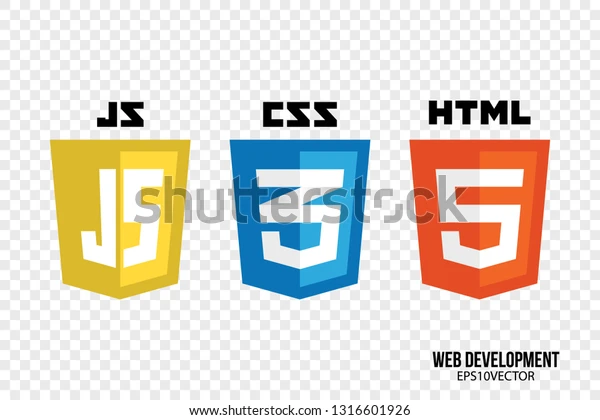

Proposito: Conceptos básicos para el diseño de sitios web
Finalidad: Aprender y familiarizarse con las etiquetas básicas de HTML, atributos y valores para el diseño de sitios web. En este sitio web se mostrará material didáctico para aprender las generalidades de la programación y diseño de sitios web, utilizando el lenguaje HTML5. Se revisarán temáticas como las etiquetas básicas de HTML, los atributos y valores, material necesario, si se desea navegar y optimizar todo lo concerniente con las características que ofrece este lenguaje.

Fuente: https://www.shutterstock.com/es/image-vector/vector-collection-web-development-shield-signs-1316601926